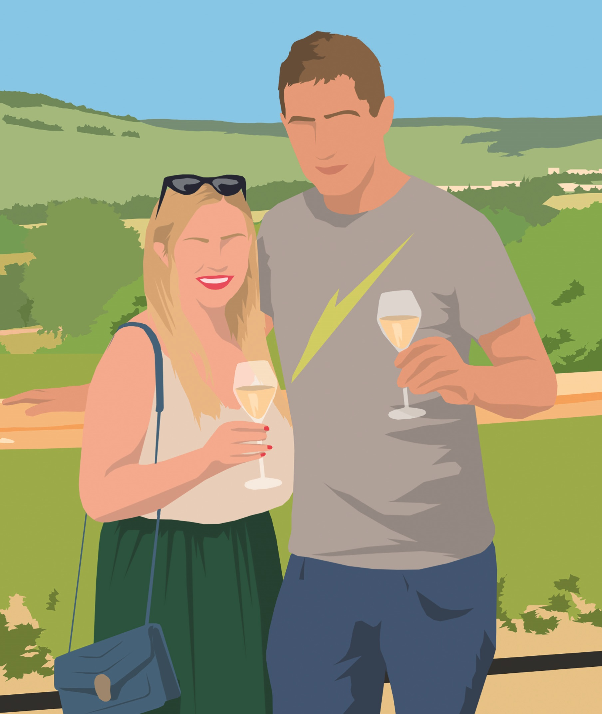

Bienvenue chez Alisson et Cyril - O'Fil du Doubs
Situé au cœur du village de Labergement-Sainte-Marie, notre logement de 70 m² vous accueille dans un cadre paisible et enchanteur, avec une vue dégagée et sans vis-à-vis.
Se trouvant à quelques pas du lac de Remoray, à 8 km de la station de ski de Métabief et à 17 km de la frontière suisse, O'Fil du Doubs est l’endroit idéal pour se ressourcer en toutes saisons.
Que vous soyez amateur de randonnée, de sports nautiques, de balades à vélo ou de glisse en hiver, vous trouverez ici un point de départ privilégié pour explorer les merveilles naturelles et culturelles de la région.
Nous serons ravis de vous accueillir et de partager avec vous notre coin de paradis !
Alisson & Cyril
